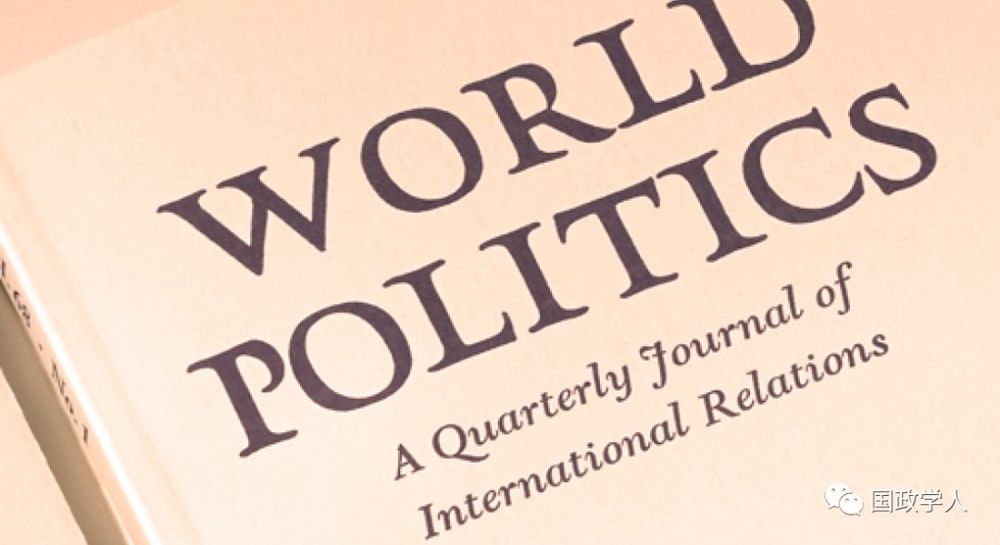
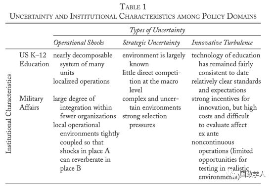

收录于合集

简 介
【作者】 乔纳森 ·本多尔（Jonathan Bendor），斯坦福大学人文科学学院政治学教授，主要研究领域为政治经济学，关注有限理性理论、合作的演进和集体行为规范以及官僚主义，著有《有限理性与政治学》、《选举的行为理论》等。
雅各布 ·夏皮罗（Jacob N. Shapiro），普林斯顿大学政治学与国际事务教授，主要研究领域为冲突、政治发展和安全政策。2016年获得国际政治科学协会颁发的卡尔·多伊奇奖（Karl Deutsch Award）。著有《大数据：现代冲突中的信息革命》、《恐怖主义者的困境：管理暴力秘密组织》
【编译】 柯孜凝
** 【校对】** 李博轩
** 【审核】** 王国欣
【来源】 Jonathan Bendor. Jacob N. Shapiro (2019). Historical Contingencies in the Evolution of States and Their Militaries. World Politics, 71(1), 126-161.
【期刊】 《世界政治》是一份涵盖政治学和国际关系的学术期刊，成立于1948年。根据期刊引用报告，该期刊的2017年影响因子为3.25，在国际关系类别的85种期刊中排名第6，在政治科学类别的169种中排名第11。

国家及其军队演变中的历史偶然事件
Historical Contingencies in the Evolution of States and Their Militaries

内容提要
长久以来，历史学家和一些国际关系学者认为历史偶然事件在国际体系演变过程中发挥着重要的作用，但是他们并没有解释该领域和其他领域中偶然性程度的差异及成因。本文作者以国家间的战争关系为切入点分析国际关系中的历史偶然性，认为存在于战争和其他政策领域的稳定差异使得国际体系的演变比起其他领域更易受到偶然事件（Chance Event）的影响。国际政治的选择环境（Selection Environment）催生了紧密一体化的组织（军队）作为这一领域的主要角色。由于国际政治中行为者数量少、不遵循大数法则（Law of Large Numbers）以及军队紧密的一体化，微观冲击也会对宏观组织层面产生长久且持续的影响，而国际体系的无政府主义属性又进一步放大了这种冲击的影响。
文章导读
本文作者基于历史制度主义对偶然事件的研究而展开论述，并在导论部分对偶然性与军事事务的关系进行了初步阐述。
作者认为机会和偶然事件在国际关系中发挥着实质的作用，能够解释许多出人意料的宏观层面结果。尽管存在系统性趋势的影响，但普鲁士在1648至1786年间的崛起并非是先定的，而是偶然事件在起作用。作者认为普鲁士的成功得益于两个随机事件：一是沙俄和奥地利围攻柏林的失败，二是沙皇伊丽莎白一世的去世以及彼得三世的撤军。作者以普鲁士的例子说明了在国家和国家权力的演变过程中发挥着重要作用的偶然因素来源于国际政治的选择环境以及回应环境压力的组织性方案。在这些因素的共同作用下催生出了一系列紧密一体化的组织（军队）并成为了军事领域的主导者。 作 者认为由于不同政策领域间 存在 稳定差异 ， 偶然事件在国家 间 军事冲突中发挥的作用比在其他政策领域更大 。
国家权力的演变的过程具有波动性。在军事冲突中，会有因大幅波动产生的偶然事件改变国家权力的演变。如果国家权力的变化是由军事互动和竞争权力的少数单元驱动的，那么我们可以认为在由组织构成的的碎片化系统中，偶然事件的影响应该更弱。作者强调这个系统应该是高度稳定，不具有波动性。 作者认为历史偶然事件在无政府环境下进行竞争的高度一体化组织主导的政策领域 会产生更大的影响 。
作者认为 国家权力的长期演变 既展现了 持久稳定的系统性趋势 又展现了 从 军事等政策 领域显现 出的 随机因素。 国家及其军队演变的随机理论意味着系统趋势和历史偶然事件都是客观的，并且具有实质意义。二者都不是由数据收集与测量误差或挑选极端案例所产生的幻象。历史偶然事件的中心是由基本的、持续的国家间竞争的体制属性引起的，尤其是操作性冲击（Operational Shocks），战略不确定性(Strategic Uncertainty)、技术创新的冲击（Innovation Turbulence）以及处于竞争中心的关键组织（军队）。
文章总共分为七个部分，在第一部分中作者阐释了有关历史偶然事件的关键概念，第二部分简要分析了国家及其军队演变理论中的主流观点，并以此说明历史偶然事件在战争和国家权力演进中的重要性。第三部分至第五部分，作者分析了军事事务中机会的三个主要来源：操作性冲击、战略不确定性和技术创新的冲击。第六部分作者选取了美国K-12教育体系作为对比，分析偶然事件在其他政策领域的影响。第七部分为结论。
**1
**
历史偶然事件与路径依赖和黑天鹅事件的区别
首先，作者对历史偶然事件进行了定义。 历史偶然事件指的是受到偶然因素干扰且产生长期重大影响的事件，这些事件使得历史偏离原来的道路朝着不同的轨迹发展。
接下来作者对历史偶然事件与路径依赖、黑天鹅事件和其他概念作出区别。路径依赖指的是前一阶段的事件可能会对后一阶段的事件产生某种影响，通常被认为是某些过程的随机属性。然而作者所提出的历史偶然事件强调事件的偶然性并导致历史发展的不同轨迹，并不完全等同于路径依赖。黑天鹅事件是指出乎意料但不太可能发生并且会产生巨大影响的事件，因而黑天鹅事件不等同于历史偶然事件。
**2
**
关于国家及其军队演变的系统性趋势
在这一部分，作者列举了部分国家及其军队演变理论中的系统性趋势，这些趋势不断出现在国际政治历史、政治人类学和军事历史的研究中。作者认为这些系统性趋势从大体上看并不具有偶然性，但却产生了一些特性使得系统容易受到随机冲击的影响。
**3
**
三种类型的不确定
在接下来的三个部分作者选取了政治军事历史上的案例深入阐述操作性冲击、战略不确定性和技术创新冲击三种类型的不确定性以此分析历史偶然事件在军事中产生的重大影响。
（ 1 ） 操作性 冲击（ Operational Shocks ）
操作冲击带来的不确定性指的是战术参与中偶然事件的影响。 作者以古巴导弹危机为例对此进行了说明。1962年10月27日，苏联B-59号潜艇在古巴海域潜航时，美国驱逐舰投下的深水炸弹在B-59号潜艇附近爆炸，苏联水兵认为战争已经开始，马上要求发射潜艇上的核鱼雷还击。根据当时的授权，发射核鱼雷需要经艇上3名军官的同意，而其中两人已经同意，但苏联军官阿尔希波夫（Vasili Arkhipov）拒绝了发射鱼雷的提议并建议潜艇浮出水面，最终制止了一场可能的核战争。如果当时作出决定的人不是阿尔希波夫，没有像他一样的经历，那么历史发展的轨迹将会转向另一个方向。
（ 2 ）战略不确定性（ Strategical Uncertainty ）
战略不确定性指的是整场战役中受到偶然事件的影响。 战略不确定性有两个重要的来源：第一，战争通常源于内生的不确定性，那些被预测到的战争通常比不确定的战争更容易被避免。考虑到政府间复杂的利益，这种不确定性难以被消除。因此，战争中的军事战略通常是不确定的，它不是认知偏误的产物，即便决策者是完全理性的，它也会存在。
第二，考虑到现代军事的大规模和复杂性，很难设计出一个战略计划。考虑到内生的不确定性，即便知道对手的计划，通常也很难预测对方的战略是否有效。因此，有限理性会加剧内生的不确定性，最终导致国家权力演进中出现巨大波动。
作者以1918年德国春季进攻为例，彼时德国与协约国都试图设计出穿越无人之地的战略计划。英国的坦克计划由于坦克本身缓慢不便难以长距离运输而失败。德国的渗透战术是相对成功的，在1918年的春季进攻中，德国突破了法国北部大部分协约国的防线。但之后由于德国没有动员足够多的军队以及物资供给不足导致了失败。作者认为，如果德国军队在1917年末而非1918年初就解决进攻的战略问题，德国军队能够召集足够的军队进攻，那么世界历史将会呈现出不同的面貌。
（ 3 ） 技术创新的冲击 （ Innovation Turbulence ）
技术创新的冲击 指的是由于一方或另一方实现了技术的革新，在技术上获得比对手更大的优势突然逆转局势 。作者认为，技术创新和不确定性相互交织，不确定性是在技术创新过程中建立的。排除军事技术创新中不确定性的过程比其他领域更加缓慢。
作者以原子弹为例进一步论述了技术革新带给军事的不确定性。作者认为，从前期的不确定性和事后结果看，原子弹的创新是一个显著的历史偶然事件。在美国向日本投放原子弹之前，日本内阁是分裂的，主战派一直占主导，没有一项和平条款是日本和美国政府都可以接受的。但在向广岛和长崎投放原子弹后，裕仁天皇接受了美国的要求并投降。技术创新的不确定性改变了二战中的军事权力平衡。
**4
** K-12公共教育体系
作者在前文中论证了历史偶然事件在无政府环境下进行竞争的高度一体化组织主导的政策领域中会发挥重要的作用以及现代军队具有这一主导性质。在这一部分，作者通过类比与军事领域不同的K-12教育体系进一步对这一论点进行验证。
美国的K-12教育体系与军事体系完全不同，它是由上千所独立运作的学区组成，且非无政府性质。作者认为其机制属性决定了偶然事件不会对该体系造成过大的冲击。

从操作性冲击来看，尽管它会对美国学校产生影响，但这种影响受到地域限制。教学的核心是教室，而教室有地域之分且可被认为是松散的单元，因而这一系统是碎片化的。
从战略不确定性看，美国历史上不存在国家性的教育战略，来自国际环境的选择压力也是温和的，通常是与识字和算术有关。但从微观层面上看，战略不确定性确实发挥着一些作用，但体系的松散性冲淡了其对宏观结果的影响。K-12是对问题的协调机制，解决这些问题需要对人的行为有相对清晰的预测，因此，K-12的本质其实是确定性，而非偶然性。
从技术创新的冲击看，作者认为美国教育中使用的技术更新换代较慢，同时中央权威也无法改变教育系统的次级单元缺乏共同命运的基本性质。
通过从三个不确定性因素对 K-12教育体系进行分析 ，作者揭示了教育体系比起现代军队一体化程度更低，历史偶然事件对 K-12 教育体系的影响比对军队更小。
**
**
**5
** 结 论
作者通过对具体历史案例的分析说明了偶然事件在军事事务中通常比其他领域更重要 ， 因为这些领域对微观事件的敏感度低于军队。同时这也说明政策领域存在着稳定的差异，这些差异决定了偶然事件会造成多大影响。
基于历史制度主义的视角，作者分析了三种类型的不确定性，这些不确定性是历史偶然事件产生的基础。作者认为每种不确定性都有助于推动偶然事件在国际权力长期演进过程中发生。不同的制度性特征使得政策领域或多或少容易受到不确定性的影响，包括组成单位的规模、评估技术创新影响的难易程度以及各单位之间耦合的程度。
最后作者指出，如果这个理论成立，我们就能理解为什么政治学中的特定领域更加关注历史，以及为什么从对历史学的关注中能够获得更多收益。这也表明历史制度主义应与该学科中更常规的科学方法和解。如果一些基本参数能够解释历史何时和为何发生作用，我们将有一个更科学的政治历史基础，从而更好地理解科学的意义。
译者简评
本文作者以军事事务为切入点，通过回溯历史中的偶然事件，揭示了历史偶然事件在军事事务中比其他领域发挥着更加重要的作用，并提出了军事领域中三种类型的不确定性来源。通过填补历史制度主义中关于偶然性解释的空白，本文能够让我们更好地理解和思考微观事件与宏观机制的影响与制约。
_ ** _ 本文由国政学人微信平台独家编译首发**
更多阅读
【重磅速递】约瑟夫·奈：美国霸权的兴衰：从威尔逊到特朗普 | 国政学人
【重磅推荐】巴里·布赞：英国学派视角下的中国崛起 | 国政学人
【重磅速递】米尔斯海默：注定失败：自由主义国际秩序的兴衰 | 国政学人
【国际组织】IO杂志：联合国维和行动的武力运用问题研究 | 国政学人
【国际秩序】为什么自由主义国际秩序理念将美国外交政策引入歧途？| 国政学人
【关系理论】“关系”：世界政治关系理论的中国话语 | 国政学人
【百年国关】历史在国际社会中的应用：从巴黎和会到现在 | 国政学人
【英国学派】张勇进：中国与全球国际社会中的自由主义等级制：实力与对规范变迁的协商 | 国政学人
【地区秩序】论经济实力的可转化性：中国经济崛起与东亚安全秩序 | 国政学人
【中俄关系】不得已的伙伴：系统-单元动态与中俄关系 | 国政学人
【IPE研究】美国对外贸易政策的“1934年体制”是如何形成的？ | 国政学人
【现实主义】斯蒂芬·沃尔特：傲慢的终结与美国克制的新时代 | 国政学人
【理论批判】系统、层次与结构理论：沃尔兹的理论并非系统理论 | 国政学人
【外交政策】单极体系下的不和平状态与美国外交政策 | 国政学人